Front Panel¶
On the front panel of each Pixie-16 module, there are 16 analog signal input connectors, one LVDS I/O port, five digital I/O connectors as well as three LEDs near the bottom of the front panel. In addition, a sticker showing Pixie-16 model number (e.g., P16L-250-14, meaning the 14-bit, 250 MHz variant of the Pixie-16) is affixed to the top handle of the front panel, and another sticker indicating the serial number of the Pixie-16 module (e.g., S/N 1100) is placed at the bottom handle of the front panel.
Analog Signal Input Connectors(all revisions)¶
- Connector Labels
0 to 15 for 16 channels
- Connector Type
SMB Jack
Each Pixie-16 module accepts 16 analog input signals, and each input connector is a SMB Jack (male contact) connector.
LVDS I/O Port (all revisions)¶
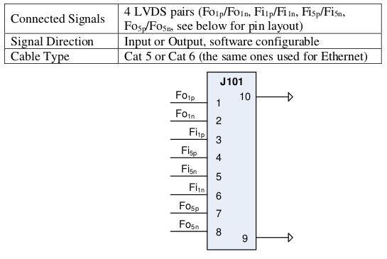Each Pixie-16 module is equipped with one LVDS I/O port on its front panel. LVDS stands for low voltage differential signaling. The LVDS I/O connector is a RJ45 connector, which implies that the same Cat 5 or Cat 6 Ethernet cables can be used to connect signals to or from this I/O port. However, no Ethernet connectivity is available through this Pixie-16 I/O port.
Four differential signal pairs, i.e., between pin-pairs \(Fo_{1p}\) / \(Fo_{1n}\), \(Fi_{1p}\) / \(Fi_{1n}\), \(Fi_{5p}\) / \(Fi_{5n}\), and \(Fo_{5p}\) / \(Fo_{5n}\), are available from this I/O port. Each pair can be configured as either an input or output signal.
Digital I/O Connectors(Rev. F only)¶
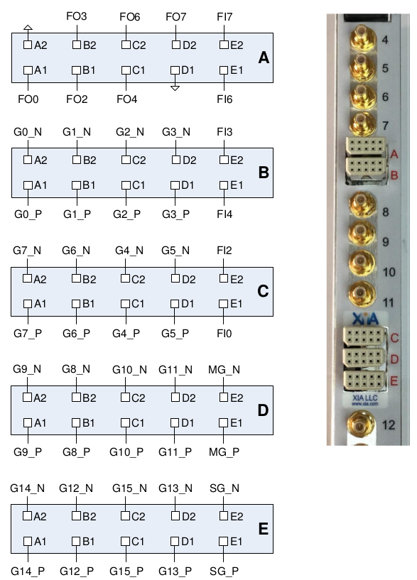The Pixie-16 Rev. F modules are equipped with five har-link connectors on its front panel which act as digital I/O connectors. The 2mm pitch har-link connector from HARTING is designed for high speed data transfer with rates up to 2 Gbit/s. Its EMI shielding, shown in Figure 2mm pitch har-link connector from HARTING, guarantees excellent performance in EM-polluted environment.
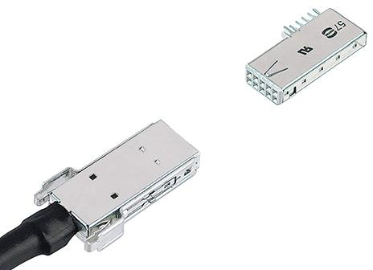Each har-link connector has 2 rows with 5 pins on each row, and is labelled using one of the five letters in red color font, from A to E. The signals connected to each pin of these five connectors are shown in Table Rev. F Module’s Digital I/O Connectors.
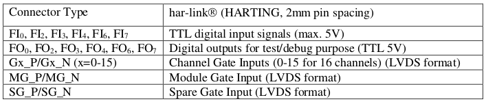Among them, FI0, FI2, FI3, FI4, FI6, FI7 are six TTL digital input signals. They can be signals like global fast trigger, global validation trigger,external clock, run inhibit, etc. The specific usage of each input pin is determined by the specific firmware that is downloaded to the Pixie-16 module (see Table 1-9 for input signals supported by the standard firmware). The six digital output signals, FO0, FO2, FO3, FO4, FO6, FO7, which are connected to six test output pins on the System FPGA of the Pixie-16, can be used to assist a user in the process of system setup. These test pins are connected to various internal signals of the Pixie-16 to provide insight of the current status of the system.
The Channel Gate Inputs (0-15 for 16 channels) are LVDS format input signals which independently gate the data acquisition of each of the 16 channels of a Pixie-16 module.
The Channel Gate signal is level sensitive signal, i.e., when the level of the Channel Gate Signal is logic high(1), the gate signal is effective; when the level of the Channel Gate Signal is logic low(0), the gate signal is not in use. In normal cases, the Channel Gate Signal is set up to veto the data acquisition in a given channel, i.e., at the time of the arrival of fast trigger in that channel, if the Channel Gate Signal is logic high(1), that fast trigger is discarded since it is vetoed. However, this type of logic can be reversed through setting corresponding registers in the FPGA via software. In such cases, the Channel Gate Signal is set up to validate the data acquisition in a given channel, i.e., at the time of fast trigger in that channel, only if the Channel Gate Signal is logic high(1) will that fast trigger be accepted to have the event recorded.
The Module Gate Input is a LVDS format signal that gates the data acquisition in all 16 channels of a Pixie-16 module. It is also a level sensitive signal, i.e., when the level of the Module Gate Signal is logic high(1), the gate signal is effective; when the level of the Module Gate Signal is logic low(0), the gate signal is not in use. In normal cases, the Module Gate Signal is set up to veto the data acquisition in all 16 channels, i.e., at the time of the arrival of fast trigger in any of the 16 channels, if the Module Gate Signal is logic high(1), that fast trigger of that channel is discarded since it is vetoed. However, this type of logic can be reversed through setting corresponding registers in the FPGA via software.
In such cases, the Module Gate Signal is set up to validate the data acquisition in all 16 channels, i.e., at the time of fast trigger in any of the 16 channel, only if the Module Gate Signal is logic high(1) will that fast trigger of that channel be accepted to have the event recorded.
The Spare Gate Input is a LVDS format signal that is reserved for special applications.
Such applications typically require development of custom firmware to support special functionalities of the Pixie-16 system.
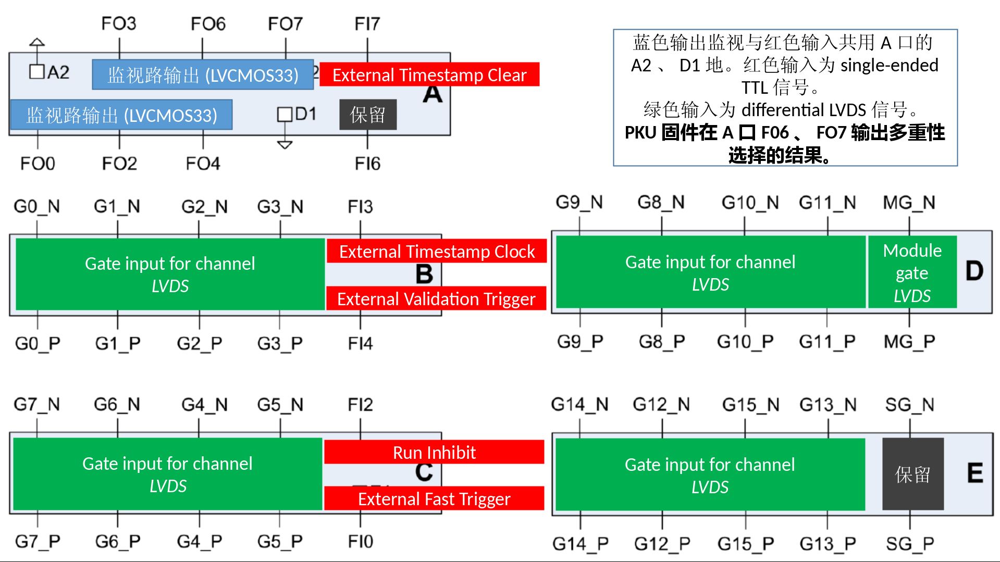Front Panel LEDs (all revisions)¶
Near the bottom of the Pixie-16 front panel, there are three LEDs. They are labelled as RUN, I/O, and ERR, respectively, from left to right. They correspond to three different colors, green, yellow, and red, respectively.
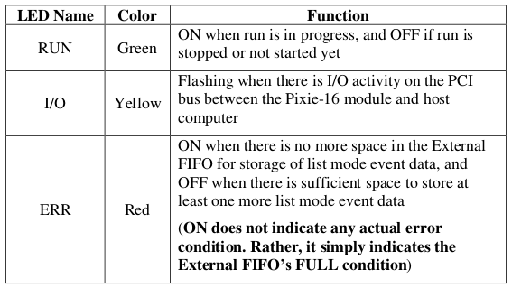The RUN LED will be turned on when a run in the Pixie-16 module is in progress, and will be turned off when the run is stopped or not started yet.
The I/O LED will blink when there is I/O activity on the PCI bus between the Pixie-16 module and host computer.
The ERR LED is, in fact, not to signal any error condition in the Pixie-16 module. Instead, it is used to indicate whether or not the External FIFO of the Pixie-16 module is full. It will be ON when there is no more space in the External FIFO for storage of list mode event data, and OFF when there is sufficient space to store at least one more list mode event data. When the External FIFO is full, no more list mode event data can be written into it until the host software reads out part of the data in the External FIFO through the PCI bus.
3.3V I/O Connector(Rev. D only)¶
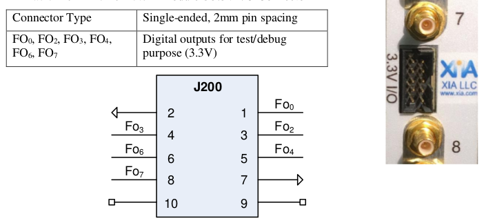On Rev. D Pixie-16 modules, between analog input SMB connectors for channel 7 and channel 8, respectively, is the 3.3V I/O Connector(J200). It has 10 single-ended pins with 2mm spacing. Pins #1, 3, 4, 5, 6, and 8 are connected to six digital output signals from the System FPGA of the Pixie-16 module, i.e. FO0, FO2, FO3, FO4, FO6, FO7, mainly for the purpose of testing and debugging. Pins #2 and 7 are ground pins, and pins #9 and 10 are not in use.
GATE Inputs(Rev. D only)¶
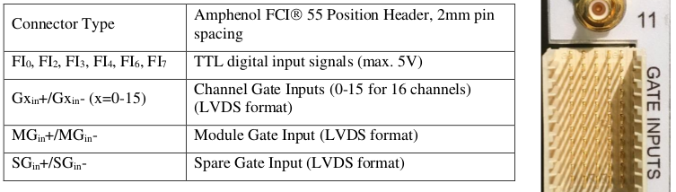On Rev. D Pixie-16 modules, between analog input SMB connectors for channel 11 and channel 12, respectively, is the GATE INPUTS connector. This connector is an Amphenol FCI 55 Position Header with 2mm pin spacing. The layout of these 55 pins is shown in Figure Rev. D Module’s GATE INPUTS Connector. The 11 pins from the middle pin column (J150C) are all tied to the Ground. Among the first 8 rows of the GATE INPUTS connector, each differential pair of pins from the A/B columns(J150A/J150B) or the D/E columns (J150D/J150E) corresponds to one channel’s GATE INPUT, which has the LVDS format, e.g. Gxin+/Gxin-(x=0-15). Differential pair of pins at J150A3/J150B3 is the Module Gate Input signal, MGin+/MGin-. Channel Gate Input signal can be used to veto or validate that given channel’s own trigger. Module Gate Input signal works on the whole module level, i.e. it can be used to veto or validate all 16 channels’ own trigger of that given module. Differential pair of pins at J150D3/J150E3 is the Spare Gate Input signal, SGin+/SGin-. Spare Gate Input signal can be used for special applications which require a custom firmware.
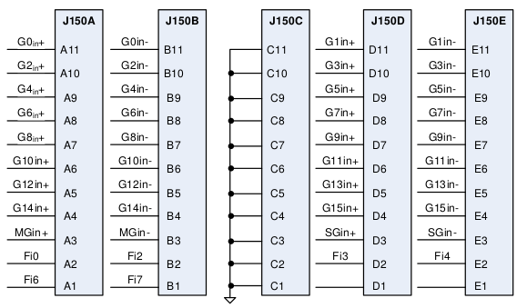On Rev. D Pixie-16 modules, the TTL digital input signals (max. 5V), i.e. FI0, FI2, FI3, FI4, FI6, FI7, are distributed among the bottom two rows of the GATE INPUTS Connector, as illustrated in Figure Rev. D Module’s GATE INPUTS Connector.
3.3V I/O Connector(Rev. B and C only)¶
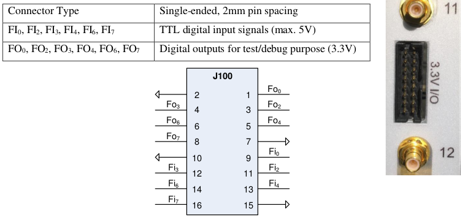On Rev. B and C Pixie-16 modules, between analog input SMB connectors for channel 11 and channel 12, respectively, is the 3.3V I/O Connector(J100). It has 16 single-ended pins with 2mm spacing. Pins #1, 3, 4, 5, 6, and 8 are connected to six digital output signals from the System FPGA of the Pixie-16 module, i.e. FO0, FO2, FO3, FO4, FO6, FO7, mainly for the purpose of testing and debugging. Pins #2, 7, 10 and 15 are ground pins. Pins #9, 11, 12, 13, 14 and 16 are connected to the six TTL digital input signals (max. 5V), i.e. FI0, FI2, FI3, FI4, FI6, FI7.
Digital Signals in Standard Firmware(all revisions)¶
The standard firmware of the Pixie-16 supports input and output of digital signals through its front panel I/O connectors, which were discussed earlier.
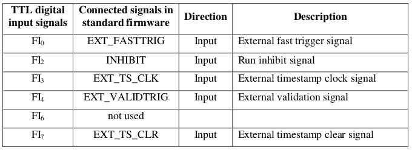Table TTL Digital Input Signals shows the five TTL digital input signals supported by the Pixie-16 standard firmware.
Among them, the signals EXT_TS_CLK and EXT_TS_CLR are used for external timestamping in the Pixie-16, i.e. the Pixie-16 accepting an external clock signal(the frequency of this external clock is not recommended to exceed about 20 MHz in order to avoid the clock signal integrity issue), counting such clock signal with a 48-bit counter, and outputting such counter value to the list mode data stream when an event trigger occurs.
The external timestamping is useful for synchronizing the Pixie-16 data acquisition system with another data acquisition system through correlating the external timestamps of the events recorded by both systems.
The INHIBIT signal is used by an external system to inhibit the data acquisition run in a Pixie-16 system when synchronization requirement is enabled in the Pixie-16 modules. It is a level sensitive signal, i.e. when the INHIBIT signal is at the logic high level, the run in the Pixie-16 won’t start. Only when the INHIBIT signal goes to the logic low level will the run start in the Pixie-16. During the run, if the INHIBIT signal returns to the logic high level, the run will be aborted.
The EXT_FASTTRIG signal is the external fast trigger signal, which can be used to replace the local fast trigger for recording events in the Pixie-16 modules. The EXT_VALIDTRIG signal is the external validation signal, which can be used to validate events in the Pixie-16 modules.
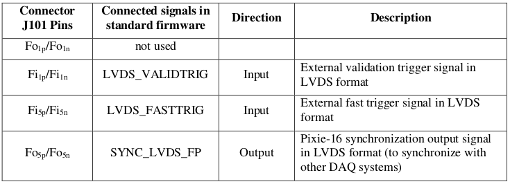Table Connector J101 LVDS I/O Port Signals shows the Pixie-16 connector J101 LVDS I/O port signals. This J101 LVDS I/O port can use the regular Ethernet cable for connection but it does not have Ethernet connectivity. Among the four LVDS pairs available from this J101 port, one pair is currently not in use, two pairs are used for input and one pair is used for output. The LVDS_VALIDTRIG is the external validation trigger signal in LVDS format, and the LVDS_FASTTRIG is the external fast trigger signal in LVDS format. The SYNC_LVDS_FP is an output signal from the Pixie-16 module to indicate to external data acquisition systems the synchronization status of the Pixie-16 system so that both data acquisition systems can be synchronized.
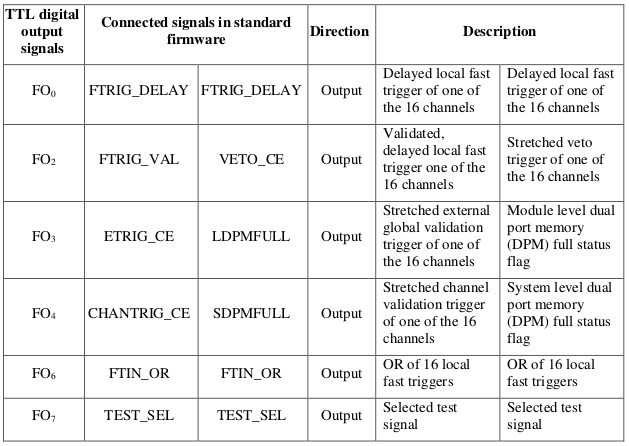Table TTL Digital Output Signals lists the six Pixie-16 TTL digital output signals. Two groups of six output signals can be chosen through software settings (see bits [14:12] and [19:16] of TrigConfig0). The last output signal TEST_SEL can be further selected through software settings. More details about these signals will be provided in later sections of this manual.